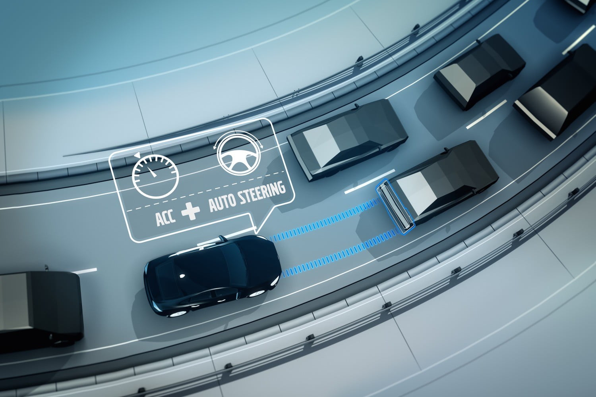

ADAPTIVE CRUISE CONTROL

In recent years, the rapid development of economic has resulted in the increase of car ownership. The growth rate of car has exceeded
the growth rate of road resources, which led to serious traffic congestion problems. The adaptive cruise control system can realize the
effective perception of surrounding environment of vehicle by relying on the accuracy and stability of the electronic control system.
To avoid the possibility of rear-end accident and improve vehicle safety effectively, the safety distance should be kept by controlling the
vehicle driving and braking system. During the tracking process, considering how to effectively recover the braking energy in the process
of vehicle braking will significantly improve the economy of vehicle.
For adaptive cruise control (ACC) controller design, various control algorithms such as proportional–integral–derivative (PID) control
strategy,fuzzy control algorithm,10 sliding mode control algorithm,11 and neural network learning algorithm12 have been applied. Model
predictive control (MPC) algorithm is widely used because it can predict the future state of ACC system. Analysis of the application of MPC
in place of standard cruise control for passenger cars with the goal of maximizing fuel economy in urban traffic is given in Kamal et al.
and Koch-Groeber and Wang.Bageshwar et al. designed mode-switching ACC using MPC, which shifted controllers between two modes, that is,
speed control and distance control. The cost function was built using the distance error and relative speed, and the constraint was realized
by limiting longitudinal acceleration.15 Li et al. adopted MPC theory in ACC system. Fuel economy, tracking capability, and the driver desired
response are considered in cost function. A constraint-softening method is employed to enlarge the feasible region.An ACC controller was
designed for a smart car. Eight different control methods, which are based on PI and MPC in different flavors, are proposed in Corona and
Schutter.